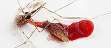

|
 Wir töten sie bedenkenlos. Einfach so. Dabei sind uns die Insekten weit überlegen. Ihre Sinnesleistungen sind atemberaubend. Sie fliegen - proportional - schneller als ein Kampfjet. Sie haben alle Lebensräume der Erde erobert. Und ihr Staatswesen funktioniert reibungslos
Nur Watte im Kopf: Der Ingenieur Hans Werner Schoelling beschäftigt sich schon sein ganzes Berufsleben lang mit Tampons. Die kleinen Wattestöpsel, so weiß er, haben ein Gedächtnis, und das muss man respektieren. Inspiration für neue Technologien findet er sogar auf der Skipiste. Auf amüsierte Gesichter bei Experten aus anderen Gebieten trifft er allerdings immer noch. Eine Geschichte voller Missverständnisse
Songs werden reif für die Welt der Handys. Neue Software aus Nürnberg quetscht die Daten so zusammen, dass sie durch die schmalen Funkkanäle passen |
zeitwissen:log Wissen hält nicht länger als Fisch zeitwissen: forum Debatten: Geschwister: Erstgeborene sind selbstbewusst - aber stur. Die Spätergeborenen sind flexibel, oft jedoch rebellisch. Sind das auch Ihre Erfahrungen? Diskutieren Sie mit. Das will ich wissen - Fragen, die bisher unbeantwortet geblieben sind
Aus der ZEIT Erziehungswissenschaften: Nur bedingt wissenschaftlich Zum Tod des Atomphysikers Hans Bethe
Technik: Unter den Schweizer Alpen wird ein Bahnhof gebaut Hirnforschung: Wolf Singer will die Wissenschaft vom Geist neu erfinden Bioethik: Gespraech mit Ian Wilmut, dem Vater des Klonschafs
Dolly Politisches Buch: Goetz Aly »Hitlers Volksstaat« |


© ZeitWissen 01/05